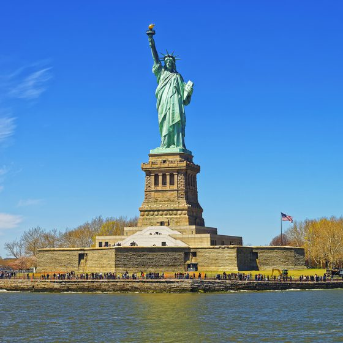
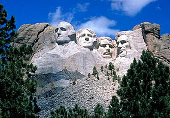
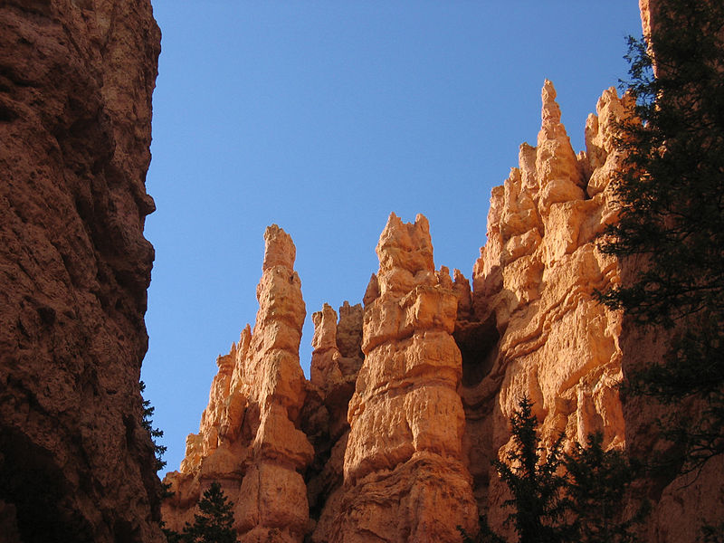

Statuia Libertății din New York este un monument în portul „Liberty Island” din orașul New York. A fost plasat în anul 1886 la intrarea portului de pe insulă cu scopul de a transmite călătorilor sosiți salutul de bun venit pe pământ american. Statuia este un cadou al Franței făcut Statelor Unite ale Americii cu ocazia aniversării a 110 de ani de la câștigarea independenței Statelor Unite și inaugurată de președintele Grover Cleveland la 28 octombrie 1886.
Are o înălțime fără soclu de 46,5 m (92, 99 m cu tot cu soclu) și reprezintă o femeie acoperită de un drapel care ține în mâna dreaptă o flacără iar în mâna stângă o placă pe care este inscripționată ziua independenței Americii: 4 iulie 1776. Cu soclu, culminează la 93 m. În interiorul ei se află o scară cu 354 de trepte pe care se poate urca, însă, după atentatele de la 11 septembrie 2001, vizitarea ei la interior este interzisă.


Monumentul Muntele Rushmore sau Monumentul național Muntele Rushmore, deseori doar Muntele Rushmore, aflat lângă orașul Keystone, statul South Dakota Dakota de Sud, este un monument memorial (în engleză United States Presidential Memorial) care prezintă sintetic primii 150 de ani din istoria Statelor Unite ale Americii prin intermediul unor sculpturi colosale, înfățișându-i pe primii președinți ai țării, George Washington (întâiul), Thomas Jefferson (al treilea), respectiv pe ulteriorii Abraham Lincoln (al șaisprezecelea) și Theodore Roosevelt (al douăzeci și șaselea).
Sculpturile în granit de circa 18 m înălțime au fost executate direct pe versantul sudic al cunoscutului munte de către sculptorul Gutzon Borglum (fost elev al lui Rodin) între 4 octombrie 1927 și 31 octombrie 1941, fiind ajutat de aproximativ 400 muncitori. Legendele amerindienilor Lakota din grupa Sioux spun că făuritorii muntelui sunt „cei șase bunici” (engleză: Six Grandfathers)
Bryce-Canyon este un parc național situat în partea de sud-vest a statului Utah, SUA. Pe teritoriul parcului se află canionul, care de fapt nu este un canion veritabil, ci mai degrabă un amfiteatru natural. Canionul a luat naștere prin procesele de eroziune mai accentuate pe partea estică a platoulului „Paunsaugunt-Plateau”, structura petrografică aparte au permis o eroziune mai accentuată cauzată de vânt, apă și îngheț formându-se formațiuni geolgice numite hoodoos. In funcție de compoziție rocile sedimentare au culori ce variază între roșu, portocaliu și alb. Bryce-Canyon-Nationalpark se află la altitudinea de 2400 - 2700 m deasupra n.m., parte vestică fiind mai înaltă ca și canioanele din vecinătate Parcul Național Zion sau Parcul Național Grand-Canyon. In regiunea parcului au sosit în anul 1850 primii coloniști albi, iar canionul denumit după Ebenezer Bryce care s-a stabilit aici în 1875. In anul 1924 este declarat monument al naturii ca în 1928 să fie declarat parc național, în prezent parcul este vizitat de ca. un milion de turiști anual.
